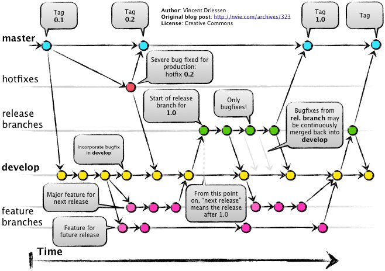

<!DOCTYPE HTML>
<html lang="" >
    <head>
        <meta charset="UTF-8">
        <meta content="text/html; charset=utf-8" http-equiv="Content-Type">
        <title>GitFlow讲解 · GitBook</title>
        <meta http-equiv="X-UA-Compatible" content="IE=edge" />
        <meta name="description" content="">
        <meta name="generator" content="GitBook 3.2.3">
        
        
        
    
    <link rel="stylesheet" href="../gitbook/style.css">

    
            
                
                <link rel="stylesheet" href="../gitbook/gitbook-plugin-highlight/website.css">
                
            
                
                <link rel="stylesheet" href="../gitbook/gitbook-plugin-search/search.css">
                
            
                
                <link rel="stylesheet" href="../gitbook/gitbook-plugin-fontsettings/website.css">
                
            
        

    

    
        
    
        
    
        
    
        
    
        
    
        
    

        
    
    
    <meta name="HandheldFriendly" content="true"/>
    <meta name="viewport" content="width=device-width, initial-scale=1, user-scalable=no">
    <meta name="apple-mobile-web-app-capable" content="yes">
    <meta name="apple-mobile-web-app-status-bar-style" content="black">
    <link rel="apple-touch-icon-precomposed" sizes="152x152" href="../gitbook/images/apple-touch-icon-precomposed-152.png">
    <link rel="shortcut icon" href="../gitbook/images/favicon.ico" type="image/x-icon">

    
    <link rel="next" href="GitRule.html" />
    
    

    </head>
    <body>
        
<div class="book">
    <div class="book-summary">
        
            
<div id="book-search-input" role="search">
    <input type="text" placeholder="Type to search" />
</div>

            
                <nav role="navigation">
                


<ul class="summary">
    
    

    

    
        
        
    
        <li class="chapter " data-level="1.1" data-path="../">
            
                <a href="../">
            
                    
                    简介
            
                </a>
            

            
        </li>
    
        <li class="chapter " data-level="1.2" >
            
                <span>
            
                    
                    通用文档
            
                </span>
            

            
            <ul class="articles">
                
    
        <li class="chapter active" data-level="1.2.1" data-path="Git.html">
            
                <a href="Git.html">
            
                    
                    GitFlow讲解
            
                </a>
            

            
        </li>
    
        <li class="chapter " data-level="1.2.2" data-path="GitRule.html">
            
                <a href="GitRule.html">
            
                    
                    代码分支管理指南
            
                </a>
            

            
        </li>
    
        <li class="chapter " data-level="1.2.3" data-path="markdown.html">
            
                <a href="markdown.html">
            
                    
                    MarkDown文档讲解
            
                </a>
            

            
        </li>
    
        <li class="chapter " data-level="1.2.4" data-path="term.html">
            
                <a href="term.html">
            
                    
                    程序组术语约定文档
            
                </a>
            

            
        </li>
    
        <li class="chapter " data-level="1.2.5" data-path="iapFlow.html">
            
                <a href="iapFlow.html">
            
                    
                    内购流程梳理
            
                </a>
            

            
        </li>
    
        <li class="chapter " data-level="1.2.6" data-path="rtm.html">
            
                <a href="rtm.html">
            
                    
                    RTM接入流程梳理
            
                </a>
            

            
        </li>
    
        <li class="chapter " data-level="1.2.7" data-path="oss.html">
            
                <a href="oss.html">
            
                    
                    关卡内置更新规范
            
                </a>
            

            
        </li>
    

            </ul>
            
        </li>
    
        <li class="chapter " data-level="1.3" >
            
                <span>
            
                    
                    服务端相关文档
            
                </span>
            

            
            <ul class="articles">
                
    
        <li class="chapter " data-level="1.3.1" data-path="../ServerDoc/api.html">
            
                <a href="../ServerDoc/api.html">
            
                    
                    API管理方式说明文档
            
                </a>
            

            
        </li>
    
        <li class="chapter " data-level="1.3.2" data-path="../ServerDoc/gameServer.html">
            
                <a href="../ServerDoc/gameServer.html">
            
                    
                    服务器运行状态每日例行检查规范
            
                </a>
            

            
        </li>
    
        <li class="chapter " data-level="1.3.3" data-path="../ServerDoc/aliyunServer.html">
            
                <a href="../ServerDoc/aliyunServer.html">
            
                    
                    阿里云部署架构设计
            
                </a>
            

            
        </li>
    

            </ul>
            
        </li>
    
        <li class="chapter " data-level="1.4" >
            
                <span>
            
                    
                    程序语言相关文档
            
                </span>
            

            
            <ul class="articles">
                
    
        <li class="chapter " data-level="1.4.1" data-path="../LanDoc/jsAsync.html">
            
                <a href="../LanDoc/jsAsync.html">
            
                    
                    JS异步处理方法总结
            
                </a>
            

            
        </li>
    
        <li class="chapter " data-level="1.4.2" data-path="../LanDoc/typescript.html">
            
                <a href="../LanDoc/typescript.html">
            
                    
                    TS语法特点总结
            
                </a>
            

            
        </li>
    

            </ul>
            
        </li>
    

    

    <li class="divider"></li>

    <li>
        <a href="https://www.gitbook.com" target="blank" class="gitbook-link">
            Published with GitBook
        </a>
    </li>
</ul>


                </nav>
            
        
    </div>

    <div class="book-body">
        
            <div class="body-inner">
                
                    

<div class="book-header" role="navigation">
    

    <!-- Title -->
    <h1>
        <i class="fa fa-circle-o-notch fa-spin"></i>
        <a href=".." >GitFlow讲解</a>
    </h1>
</div>


                    <div class="page-wrapper" tabindex="-1" role="main">
                        <div class="page-inner">
                            
<div id="book-search-results">
    <div class="search-noresults">
    
                                <section class="normal markdown-section">
                                
                                <h1 id="git-&#x5E38;&#x89C1;&#x95EE;&#x9898;">Git &#x5E38;&#x89C1;&#x95EE;&#x9898;</h1>
<h2 id="&#x5982;&#x4F55;&#x4F7F;&#x7528;git-flow">&#x5982;&#x4F55;&#x4F7F;&#x7528;Git Flow</h2>
<p>Git Flow&#x662F;&#x57FA;&#x4E8E;git&#x7684;&#x4E00;&#x79CD;&#x7248;&#x672C;&#x7BA1;&#x7406;&#x65B9;&#x6CD5;&#xFF0C;&#x5B83;&#x5B9A;&#x4E49;&#x4E86;&#x5404;&#x79CD;&#x5206;&#x652F;&#x7684;&#x4F5C;&#x7528;&#x548C;&#x5408;&#x5E76;&#x65F6;&#x7684;&#x64CD;&#x4F5C;&#x6807;&#x51C6;&#x3002;</p>
<p></p>
<p>master - &#x53D1;&#x5E03;&#x4E3B;&#x7EBF;
develop - &#x5F00;&#x53D1;&#x4E3B;&#x7EBF;
feature - &#x529F;&#x80FD;&#x5F00;&#x53D1;&#x5206;&#x652F;&#xFF0C;&#x4ECE;develop&#x4E0A;&#x6700;&#x65B0;&#x7684;&#x8282;&#x70B9;&#x521B;&#x5EFA;&#xFF0C;&#x5B8C;&#x6210;&#x540E;&#x88AB;develop&#x5408;&#x5E76;&#x3002;
release - &#x53D1;&#x5E03;&#x5206;&#x652F;&#xFF0C;&#x4ECE;develop&#x4E0A;&#x6700;&#x65B0;&#x7684;&#x8282;&#x70B9;&#x521B;&#x5EFA;&#xFF0C;&#x5B8C;&#x6210;&#x540E;&#x88AB;master&#x548C;develop&#x5206;&#x522B;&#x5408;&#x5E76;&#x3002;
hotfix - bug&#x4FEE;&#x590D;&#x5206;&#x652F;&#xFF0C;&#x4ECE;master&#x4E0A;&#x6700;&#x65B0;&#x7684;&#x8282;&#x70B9;&#x521B;&#x5EFA;&#xFF0C;&#x5B8C;&#x6210;&#x540E;&#x88AB;master&#x548C;develop&#x5206;&#x522B;&#x5408;&#x5E76;&#x3002;</p>
<h3 id="&#x57FA;&#x4E8E;sourcetree&#x7684;git-flow&#x64CD;&#x4F5C;&#x6D41;&#x7A0B;">&#x57FA;&#x4E8E;sourcetree&#x7684;Git Flow&#x64CD;&#x4F5C;&#x6D41;&#x7A0B;</h3>
<p><a href="http://www.cnblogs.com/cocoajin/p/4171312.html" target="_blank">source tree &#x4E0B;&#x7684; Git Flow</a></p>
<h3 id="&#x4F7F;&#x7528;git-flow&#x7684;&#x5E38;&#x89C1;&#x95EE;&#x9898;">&#x4F7F;&#x7528;Git Flow&#x7684;&#x5E38;&#x89C1;&#x95EE;&#x9898;</h3>
<h4 id="1&#x5B8C;&#x6210;&#x4E00;&#x4E2A;featurehotfixrelease&#x65F6;&#x7684;&#x5408;&#x5E76;&#x64CD;&#x4F5C;&#x51FA;&#x73B0;&#x51B2;&#x7A81;&#x5982;&#x4F55;&#x89E3;&#x51B3;">1.&#x5B8C;&#x6210;&#x4E00;&#x4E2A;feature/hotfix/release&#x65F6;&#x7684;&#x5408;&#x5E76;&#x64CD;&#x4F5C;&#x51FA;&#x73B0;&#x51B2;&#x7A81;&#x5982;&#x4F55;&#x89E3;&#x51B3;</h4>
<p>  &#x9996;&#x5148;&#x660E;&#x786E;&#x5F53;&#x524D;&#x6240;&#x5728;&#x5206;&#x652F;&#x662F;&#x54EA;&#x4E2A;&#x3002;</p>
<p>  &#x518D;&#x51B3;&#x5B9A;&#x51B2;&#x7A81;&#x7684;&#x89E3;&#x51B3;&#x65B9;&#x5F0F;&#xFF1A;&#x4F7F;&#x7528;&#x6211;&#x7684;&#x5185;&#x5BB9;/&#x4F7F;&#x7528;&#x4ED6;&#x7684;&#x5185;&#x5BB9;/&#x624B;&#x52A8;&#x89E3;&#x51B3;</p>
<h4 id="2&#x5982;&#x4F55;&#x56DE;&#x6EDA;&#x4E00;&#x6B21;&#x63D0;&#x4EA4;commit">2.&#x5982;&#x4F55;&#x56DE;&#x6EDA;&#x4E00;&#x6B21;&#x63D0;&#x4EA4;(commit)</h4>
<p>  &#x9996;&#x5148;&#x660E;&#x786E;&#x8FD9;&#x6B21;&#x63D0;&#x4EA4;&#x662F;&#x5426;&#x5DF2;&#x7ECF;&#x88AB;&#x63D0;&#x4EA4;&#x4E86;&#x5230;&#x8FDC;&#x7AEF;&#xFF08;origin&#xFF09;&#x3002;</p>
<p>  &#x5982;&#x679C;&#x8FD8;&#x6CA1;&#x6709;push&#x5230;origin,&#x53EF;&#x4EE5;&#x4F7F;&#x7528;reset&#x64CD;&#x4F5C;&#x3002;</p>
<p>  &#x5982;&#x679C;&#x5DF2;&#x7ECF;push&#x5230;&#x4E86;origin,&#x5EFA;&#x8BAE;&#x4F7F;&#x7528;revert&#x64CD;&#x4F5C;,
  &#x521B;&#x5EFA;&#x4E00;&#x4E2A;&#x9488;&#x5BF9;&#x8BE5;commit&#x7684;&#x53CD;&#x5411;&#x4FEE;&#x6539;commit&#x3002;</p>
<h4 id="3&#x5982;&#x4F55;&#x56DE;&#x6EDA;&#x4E00;&#x6B21;&#x5408;&#x5E76;merge">3.&#x5982;&#x4F55;&#x56DE;&#x6EDA;&#x4E00;&#x6B21;&#x5408;&#x5E76;(merge)</h4>
<p>  &#x9996;&#x5148;&#x660E;&#x786E;&#x8FD9;&#x6B21;&#x63D0;&#x4EA4;&#x662F;&#x5426;&#x5DF2;&#x7ECF;&#x88AB;&#x63D0;&#x4EA4;&#x4E86;&#x5230;&#x8FDC;&#x7AEF;&#xFF08;origin&#xFF09;&#x3002;</p>
<p>  &#x5982;&#x679C;&#x8FD8;&#x6CA1;&#x6709;push&#x5230;origin,&#x53EF;&#x4EE5;&#x4F7F;&#x7528;reset&#x64CD;&#x4F5C;&#x3002;</p>
<p>  &#x5982;&#x679C;&#x5DF2;&#x7ECF;push&#x5230;&#x4E86;origin,
  &#x53EA;&#x80FD;&#x4F7F;&#x7528;&#x547D;&#x4EE4;&#x884C;&#x64CD;&#x4F5C;git revert -m,
  &#x63D0;&#x4EA4;&#x4E00;&#x4E2A;&#x53CD;&#x5411;&#x6587;&#x4EF6;&#x4FEE;&#x6539;&#x7684;commit&#x3002;
  &#x4F46;&#x662F;&#x8FD9;&#x6837;&#x64CD;&#x4F5C;&#x4F9D;&#x7136;&#x4F1A;&#x5B58;&#x5728;&#x4E00;&#x4E2A;&#x95EE;&#x9898;&#x3002;</p>
<h4 id="4&#x4E3A;&#x4EC0;&#x4E48;&#x4F1A;&#x51FA;&#x73B0;head&#xFF1F;">4.&#x4E3A;&#x4EC0;&#x4E48;&#x4F1A;&#x51FA;&#x73B0;HEAD&#xFF1F;</h4>
<p>  &#x5982;&#x679C;&#x4F60;&#x5904;&#x4E8E;HEAD&#xFF0C;&#x8868;&#x793A;&#x4F60;&#x76EE;&#x524D;&#x7684;working copy&#x4E0D;&#x5904;&#x4E8E;&#x4EFB;&#x4F55;&#x4E00;&#x4E2A;&#x5206;&#x652F;&#x4E0B;&#x3002;</p>
<p>  &#x5982;&#x679C;&#x6709;&#x5728;&#x5F53;&#x524D;HEAD&#x4E0B;&#x505A;&#x4FEE;&#x6539;&#x7684;&#x9700;&#x6C42;&#xFF0C;&#x5E94;&#x8BE5;&#x5148;&#x4F7F;&#x7528;create branch&#x5728;&#x5F53;&#x524D;&#x4F4D;&#x7F6E;&#x521B;&#x5EFA;&#x4E00;&#x4E2A;&#x5206;&#x652F;&#x3002;&#x5C06;&#x540E;&#x7EED;&#x7684;&#x4FEE;&#x6539;&#x63D0;&#x4EA4;&#x5230;&#x8FD9;&#x4E2A;&#x65B0;&#x5EFA;&#x7684;&#x5206;&#x652F;&#x4E0A;&#x3002;</p>
<h2 id="cherry-pick">Cherry Pick</h2>
<blockquote>
<p>git cherry-pick&#x53EF;&#x4EE5;&#x9009;&#x62E9;&#x67D0;&#x4E00;&#x4E2A;&#x5206;&#x652F;&#x4E2D;&#x7684;&#x4E00;&#x4E2A;&#x6216;&#x51E0;&#x4E2A;commit(s)&#x6765;&#x8FDB;&#x884C;&#x64CD;&#x4F5C;&#x3002;&#x4F8B;&#x5982;&#xFF0C;&#x5047;&#x8BBE;&#x6211;&#x4EEC;&#x6709;&#x4E2A;&#x7A33;&#x5B9A;&#x7248;&#x672C;&#x7684;&#x5206;&#x652F;&#xFF0C;&#x53EB;v2.0&#xFF0C;&#x53E6;&#x5916;&#x8FD8;&#x6709;&#x4E2A;&#x5F00;&#x53D1;&#x7248;&#x672C;&#x7684;&#x5206;&#x652F;v3.0&#xFF0C;&#x6211;&#x4EEC;&#x4E0D;&#x80FD;&#x76F4;&#x63A5;&#x628A;&#x4E24;&#x4E2A;&#x5206;&#x652F;&#x5408;&#x5E76;&#xFF0C;&#x8FD9;&#x6837;&#x4F1A;&#x5BFC;&#x81F4;&#x7A33;&#x5B9A;&#x7248;&#x672C;&#x6DF7;&#x4E71;&#xFF0C;&#x4F46;&#x662F;&#x53C8;&#x60F3;&#x589E;&#x52A0;&#x4E00;&#x4E2A;v3.0&#x4E2D;&#x7684;&#x529F;&#x80FD;&#x5230;v2.0&#x4E2D;&#xFF0C;&#x8FD9;&#x91CC;&#x5C31;&#x53EF;&#x4EE5;&#x4F7F;&#x7528;cherry-pick&#x4E86;,&#x5176;&#x5B9E;&#x4E5F;&#x5C31;&#x662F;&#x5BF9;&#x5DF2;&#x7ECF;&#x5B58;&#x5728;&#x7684;commit &#x8FDB;&#x884C;&#x518D;&#x6B21;&#x63D0;&#x4EA4;.</p>
</blockquote>
<p><a href="http://www.jianshu.com/p/08c3f1804b36" target="_blank">git cherry-pick &#x4F7F;&#x7528;&#x6307;&#x5357;</a></p>
<h2 id="&#x603B;&#x7ED3;">&#x603B;&#x7ED3;</h2>
<p>1.&#x4F7F;&#x7528;work flow&#x7684;&#x64CD;&#x4F5C;&#x6D41;&#x7A0B;&#xFF0C;&#x53EF;&#x4EE5;&#x4FDD;&#x8BC1;&#x7EBF;&#x4E0A;&#x7248;&#x672C;&#x548C;&#x5F00;&#x53D1;&#x7248;&#x672C;&#x7684;&#x5206;&#x79BB;&#xFF0C;&#x4EE5;&#x4FBF;&#x5F00;&#x53D1;&#x8005;&#x5206;&#x522B;&#x53BB;&#x5904;&#x7406;&#x5404;&#x81EA;&#x7684;&#x95EE;&#x9898;&#x3002;</p>
<p>2.&#x4E0D;&#x8981;&#x6025;&#x4E8E;&#x628A;&#x4F60;&#x7684;&#x63D0;&#x4EA4;&#xFF08;commit&#xFF09;&#x63A8;&#x9001;&#x5230;&#x8FDC;&#x7AEF;&#xFF08;push&#xFF09;&#x3002;&#x5F53;&#x4FEE;&#x6539;&#x53EA;&#x5B58;&#x5728;&#x4E8E;&#x672C;&#x5730;&#x7684;working copy&#x65F6;&#xFF0C;&#x4E00;&#x5207;&#x7684;&#x64A4;&#x9500;&#x548C;&#x56DE;&#x6EDA;&#x64CD;&#x4F5C;&#x90FD;&#x53EF;&#x4EE5;&#x7B80;&#x5355;&#x7684;&#x8FDB;&#x884C;&#x3002;</p>

                                
                                </section>
                            
    </div>
    <div class="search-results">
        <div class="has-results">
            
            <h1 class="search-results-title"><span class='search-results-count'></span> results matching "<span class='search-query'></span>"</h1>
            <ul class="search-results-list"></ul>
            
        </div>
        <div class="no-results">
            
            <h1 class="search-results-title">No results matching "<span class='search-query'></span>"</h1>
            
        </div>
    </div>
</div>

                        </div>
                    </div>
                
            </div>

            
                
                
                <a href="GitRule.html" class="navigation navigation-next navigation-unique" aria-label="Next page: 代码分支管理指南">
                    <i class="fa fa-angle-right"></i>
                </a>
                
            
        
    </div>

    <script>
        var gitbook = gitbook || [];
        gitbook.push(function() {
            gitbook.page.hasChanged({"page":{"title":"GitFlow讲解","level":"1.2.1","depth":2,"next":{"title":"代码分支管理指南","level":"1.2.2","depth":2,"path":"commonDoc/GitRule.md","ref":"commonDoc/GitRule.md","articles":[]},"previous":{"title":"通用文档","level":"1.2","depth":1,"ref":"","articles":[{"title":"GitFlow讲解","level":"1.2.1","depth":2,"path":"commonDoc/Git.md","ref":"commonDoc/Git.md","articles":[]},{"title":"代码分支管理指南","level":"1.2.2","depth":2,"path":"commonDoc/GitRule.md","ref":"commonDoc/GitRule.md","articles":[]},{"title":"MarkDown文档讲解","level":"1.2.3","depth":2,"path":"commonDoc/markdown.md","ref":"commonDoc/markdown.md","articles":[]},{"title":"程序组术语约定文档","level":"1.2.4","depth":2,"path":"commonDoc/term.md","ref":"commonDoc/term.md","articles":[]},{"title":"内购流程梳理","level":"1.2.5","depth":2,"path":"commonDoc/iapFlow.md","ref":"commonDoc/iapFlow.md","articles":[]},{"title":"RTM接入流程梳理","level":"1.2.6","depth":2,"path":"commonDoc/rtm.md","ref":"commonDoc/rtm.md","articles":[]},{"title":"关卡内置更新规范","level":"1.2.7","depth":2,"path":"commonDoc/oss.md","ref":"commonDoc/oss.md","articles":[]}]},"dir":"ltr"},"config":{"gitbook":"*","theme":"default","variables":{},"plugins":[],"pluginsConfig":{"highlight":{},"search":{},"lunr":{"maxIndexSize":1000000,"ignoreSpecialCharacters":false},"sharing":{"facebook":true,"twitter":true,"google":false,"weibo":false,"instapaper":false,"vk":false,"all":["facebook","google","twitter","weibo","instapaper"]},"fontsettings":{"theme":"white","family":"sans","size":2},"theme-default":{"styles":{"website":"styles/website.css","pdf":"styles/pdf.css","epub":"styles/epub.css","mobi":"styles/mobi.css","ebook":"styles/ebook.css","print":"styles/print.css"},"showLevel":false}},"structure":{"langs":"LANGS.md","readme":"README.md","glossary":"GLOSSARY.md","summary":"SUMMARY.md"},"pdf":{"pageNumbers":true,"fontSize":12,"fontFamily":"Arial","paperSize":"a4","chapterMark":"pagebreak","pageBreaksBefore":"/","margin":{"right":62,"left":62,"top":56,"bottom":56}},"styles":{"website":"styles/website.css","pdf":"styles/pdf.css","epub":"styles/epub.css","mobi":"styles/mobi.css","ebook":"styles/ebook.css","print":"styles/print.css"}},"file":{"path":"commonDoc/Git.md","mtime":"2018-10-18T03:36:51.946Z","type":"markdown"},"gitbook":{"version":"3.2.3","time":"2018-10-18T03:43:49.160Z"},"basePath":"..","book":{"language":""}});
        });
    </script>
</div>

        
    <script src="../gitbook/gitbook.js"></script>
    <script src="../gitbook/theme.js"></script>
    
        
        <script src="../gitbook/gitbook-plugin-search/search-engine.js"></script>
        
    
        
        <script src="../gitbook/gitbook-plugin-search/search.js"></script>
        
    
        
        <script src="../gitbook/gitbook-plugin-lunr/lunr.min.js"></script>
        
    
        
        <script src="../gitbook/gitbook-plugin-lunr/search-lunr.js"></script>
        
    
        
        <script src="../gitbook/gitbook-plugin-sharing/buttons.js"></script>
        
    
        
        <script src="../gitbook/gitbook-plugin-fontsettings/fontsettings.js"></script>
        
    

    </body>
</html>

